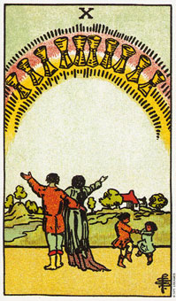

圣杯十意味一个互利的团体或家庭状态。
圣杯十展现这整组的所有可能性，在权杖牌当中我们发现的是负担，而在杯子牌中我们却发现喜悦、惊奇和满足。这对伴侣站在一起，展开双臂欢迎他们四周的所有机会;而孩童们手舞足蹈，展现他们与生俱来的热情和欢乐。孩子们期待快乐，且充分利用他们所拥有的每个机会来获得快乐。
圣杯十是一张表示欢乐和分享的牌。它通常是在描述一个团队或家庭，他们在身体及精神上都能相互奉献及合作，并且共享所有的利益。它暗示着我们明白目前状况的价值为何。这个家庭关系正是圣杯六所努力争取的，并拥有在融通了声杯七、八、旧的课题之后所带来的附加价值。
这张牌通常代表一种最真实的两性关系;代表即将成为伴侣的两个人，超越了“热恋”(圣杯二)的阶段和性的阶段，在友谊和爱情当中发现了一个长久维系之道。他们并没有丧失掉对彼此的爱及渴望，不过已经发展到了沟通和承诺这个更重要的阶段，弥补那些早期阶段的不足。
大体上的意义
圣杯十形容一个家庭或团体，而其中的每个人均能受益。因为每个人都坦然的付出和接受，因而团体的气氛和谐，大家也乐于付出。它暗示对家庭或工作环境(包括团队合作和分享)有所付出。
这张是意味一个成功的家庭状态或聚合，其中每位参与者都充分的感受到对这个团体的归属感。
两性关系上的意义
在两性关系当中看到圣杯十时，它代表一张相当正面的牌。暗示透过对关系的承诺和成长而得到满足。牌中的孩子代表的是家人，或是这段关系正欢迎孩子的到来。
这对伴侣彼此承诺，但各自仍拥有若干自由，以追寻他们个别的兴趣和友谊。已经不再像圣杯六中以恐惧为基础的亲密，所以这对伴侣能够从他们各自的追寻中，为他们的关系注入新鲜感及新能量。他们各自都拥有和朋友相处的时间，或是和自己嗜好独处，于是他们总能带回新点子、新观念以及探险的故事来和对方分享。
这张牌所显示的是一个稳固、成熟的关系。如果牌局中还包括了权张六、审判牌或恋人牌的话，那可能是暗示一桩婚姻。
倒立的圣杯十
权杖十倒立时，可能意味着你脱离了周遭的人。家庭和团体中都看不到你的人，或许是你选择离群索居吧。也许你还不了解，或并不感激生命所赋予你的快乐吧。
这张牌倒立可能是形容一个团体或家庭，在过去是相当和谐的，但目前却是相互竞争，不愿意彼此合作。容我再说一遍，牌倒立的意义就是暗示你要回到前一张正立的牌上，去领悟其中所包含的启示。以目前的情势来看，你应该回到圣杯九，学会爱你自己，以及发现你自己内在欢乐的来源。
在两性关系分析当中，倒立的十可能是形容一种缺乏爱或和谐的两性关系。你待在这种关系当中越久而不去改变它，你就会越来越感到悲伤。你的选择不是去改变这种关系，就失去善用它(透过改变你自己)或者离开它。
在事业分析上，这张牌形容如一盘散沙的一群人。由于团体中的每个人都特立独行，所以对任何的成功都极少分享。在牌局中，这张牌可能紧跟这一连串的拆伙行动后出现。一个曾紧密合作的团体，如今因不安全感而四分五裂，任由个人的需求和野心来支持一切。